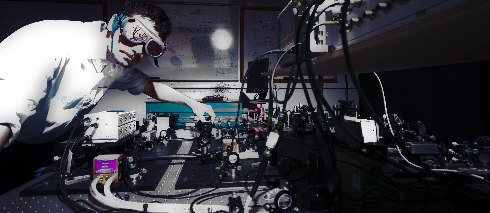

Dr Michaël Hemmer is a French engineer and experimental laser physicist specialized in ultrafast, high power lasers. He is currently a Senior Research Scientist at the University of Colorado Boulder (JILA) working on the development of long wavelength ultrafast lasers.
Dr Hemmer obtained his master’s degree in engineering from the Ecole Nationale Supérieure de Physique de Marseille (ENSPM, now Central Marseille) and his PhD in Optics from the University of Central Florida (UCF, Orlando, FL). He has performed research in mid-IR laser developments and applications at the Institute of Photonic Sciences (ICFO, Barcelona) and in laser driven particle accelerator science at the Deutsches Elektronen Synchrotron (DESY, Hamburg).
He currently leads a team that develops near to mid-infrared ultrafast high average power and high energy laser systems aimed at driving tabletop soft X-ray lasers.
Over the years, his teams and collaborators have achieved a number of ‘firsts’ using the unique laser sources they have developed.
Dr Hemmer has served on numerous international conference committees either as chair or committee member. He was the recipient of the 2019 Best Reviewer Award from the Optical Society of America and the 2021 recipient of the JILA Culture of Safety Award for contributions to enhancing laser safety at JILA.